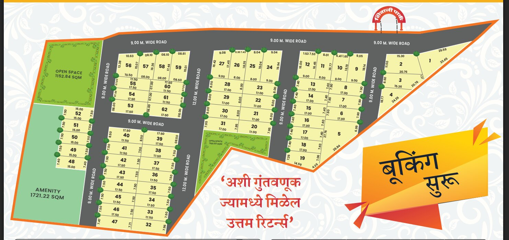

शिवाजी पार्क | SHIVAJI PARK
RESIDENTIAL LAYOUT · MOUZE SOMTANA, MANORA, DIST. WASHIM
62 residential plots laid out across Gut No. 102, Mouze Somtana — wide concrete roads, dedicated open spaces and an amenity plot, just behind Srushti Garden, next to Rahul Park, Manora.
62
Total Plots
1,722m²
Amenity Space
1,723m²
Open Spaces (2)

Shivaji Park sits within Gut No. 102 of Mouze Somtana, Taluka Manora, District Washim — a quiet, well-connected pocket close to Shivaji Chowk and the Mangrul–Manora road. The layout is town-planning approved, with 30 ft. and 40 ft. wide roads, concrete storm-water drains and tree-lined avenues running through every street.
Every plot has been surveyed and tabulated individually — net area, road frontage and orientation are all on record, so what you see on the map is what gets registered in your name.
Open Space — 1,152.84 m²
Landscaped green next to plots 53–62, with planned tree plantation.
Open Space — 569.93 m²
Second green pocket beside plots 20 & 31, central to the layout.
Amenity Plot — 1,721.22 m²
Reserved community amenity space along the western edge.
Roads — 9 m & 12 m wide
Every internal road is concrete, lit and tree-lined on both sides.
What's nearby
Landmarks referenced on the official location map
Town Planning Approved
The complete layout carries Town Planning sanction, keeping your registration process clean.
30 ft. & 40 ft. Wide Roads
Generous internal roads for comfortable traffic flow and future-ready access.
Concrete Storm-Water Drains
Cement-concrete drainage along the roads to keep the layout monsoon-ready.
Electric Poles & Street Lights
Well-lit roads across the layout for safer evenings.
Tree Plantation Throughout
Both open spaces and every road edge are planned for avenue plantation.
Established Neighbourhood
Located right next to an already settled, lived-in residential pocket.
Tap a plot on the layout below — its area, road frontage, facing direction and Vastu notes will appear instantly. Use the search box to jump straight to a plot number.
Prefer a list over a map? Filter by facing direction or search a plot number — click any row to view it on the map above.
| Plot No. | Area (sqm) | Area (sqft) | Facing | Status |
|---|
An investment that brings you the best returns. Reach out to the team directly for site visits, pricing and booking formalities.
Layout Address
Behind Srushti Garden, Rahul Park, adjoining Gajanan Nagari, Manora, Dist. Washim
{kind=link}